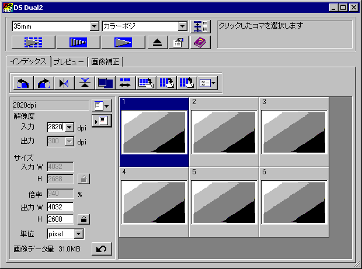
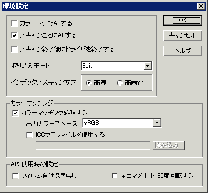
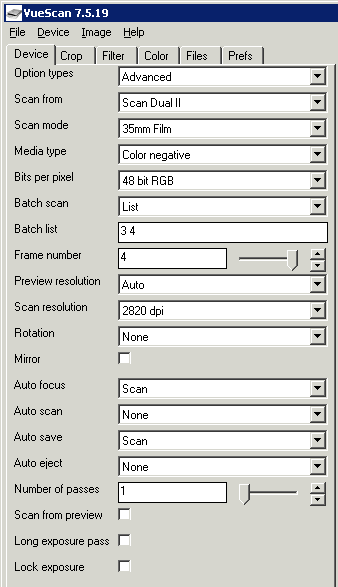
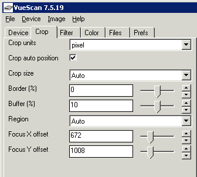
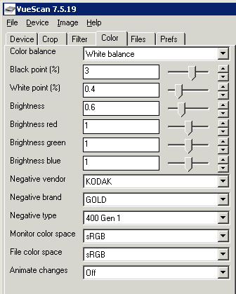
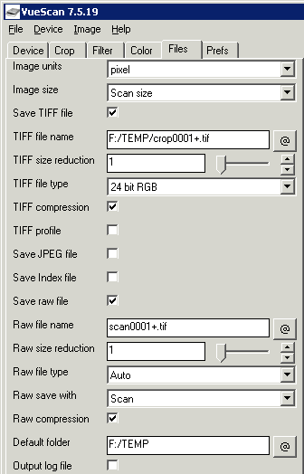

フィルムスキャナ考察 ： ネガフィルムの取り込み
Home > Software > ソフトウエア開発・サーバ管理のメモ帳 > このページ
Created on 2002/04, Last Update 2004/10/15
| 概要 スキャナドライバの設定 スキャン実例（晴天日） スキャン実例（曇天日・建物内） 手動でネガ反転処理 |
注意：このページは最終更新が2002年04月で、現在では利用できない情報の可能性があります。
MINOLTA Dimage Scan Dual IIの概略仕様
| 型式 | Dimage Scan Dual II, AF-2820U |
| 取り込みメディア | 35mmスリーブ, 35mmリバーサル用マウント, APS スリーブは連続8枚長、マウントは４枚装填可 |
| 光学解像度と取り込みサイズ | 2820 dpi, 2688 × 4032 ピクセル （35mmフィルムの場合） |
| 入力 | 12 bit |
| 出力 | 8 bit または 16 bit |
| イメージ・センサー | CCD (RGB 3ライン カラーCCD) |
| 光源 | ３波長蛍光管 |
| インターフェース | USB 1.1 |
| ホコリ取り機能 | なし |
写真1枚あたりの取り込み時間比較
- 純正TWAINドライバ：約5分15秒「オートフォーカス → 露出調整 → 本スキャン」
- vuescan：約3分5秒「プレビュー → オートフォーカス → 本スキャン → TIFF or RAW保存」
純正TWAINドライバ
スキャナに付属しているMINOLTAの標準ドライバです。画像ソフトからTWAINデータ ソースとして画像をキャプチャ出来ます。ネガの取り込みは「露出アンダー」に出やすいため、レベル調整などが必要かもしれません。
画像取り込みダイアログ
- ネガ/ポジ設定はこのダイアログを閉じるとリセットされるため、毎回確認が必要
- 解像度をコマごとで変えてスキャンした後、次回の取り込み時に解像度設定が残ったままになっているので確認が必要

環境設定
- 画像取り込みダイアログを閉じるとリセットされるため、毎回設定しなおす必要がある

vuescan
汎用ドライバ（シェアウエア）。純正TWAINドライバに比べて設定できる項目が多い。
基本的には前回（終了時）の設定が引き継がれていますが、ディスク モードやスキャナ モードの違い、スキャナ機種を変更したりすると設定が変わっていることもあるので、毎回全ての設定をチェックするか、設定ファイルを読み込む。
Device設定
- Scan From は スキャナ名またはファイルから読込(RAW)を指定
- Scan Mode が Film , Slide など適切に選択されているか
- Media Type が ネガ/ポジ選択されているか
- Batch Scan には スキャンしたいコマをスペースで区切って指定
- Scan Resolution は 意図した解像度か
- Auto Focus は これでよいか

Crop設定
- Size, Region は Auto なのか 手動なのか （通常はAutoで問題なし）

Color設定
- Color Balance は White Balance でよいか。蛍光灯下ではFluorescent(蛍光灯)にする
- Black Pointは標準的には3だが、これでよいか。vuescanデフォルトは 1.5
- White Piointは標準的には0.4だが、これでよいか。vuescanデフォルトは 1.0
- Brightnessは得たい画像の明るさにあわせる。標準的には 0.6～0.8
- フィルムの設定は、これであっているか？ エマルジョンによって違ってくるので Gen *** は試行錯誤であわせる

File設定
- TIFFとRAWのファイルを書き出すだけでよいか。圧縮はするのか
